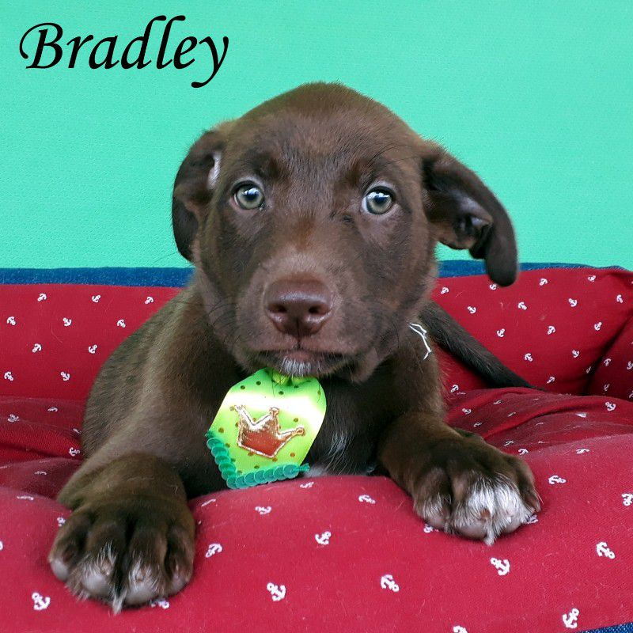
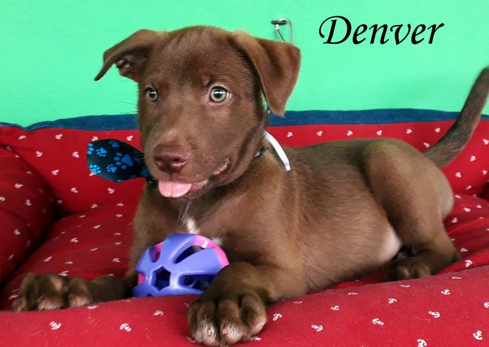
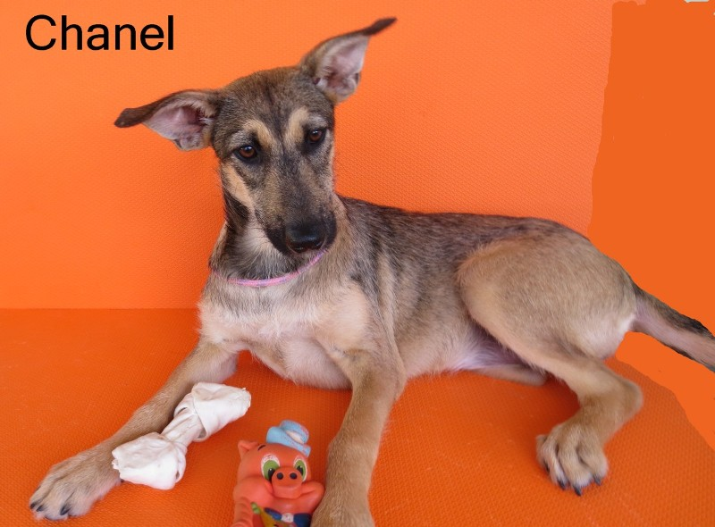
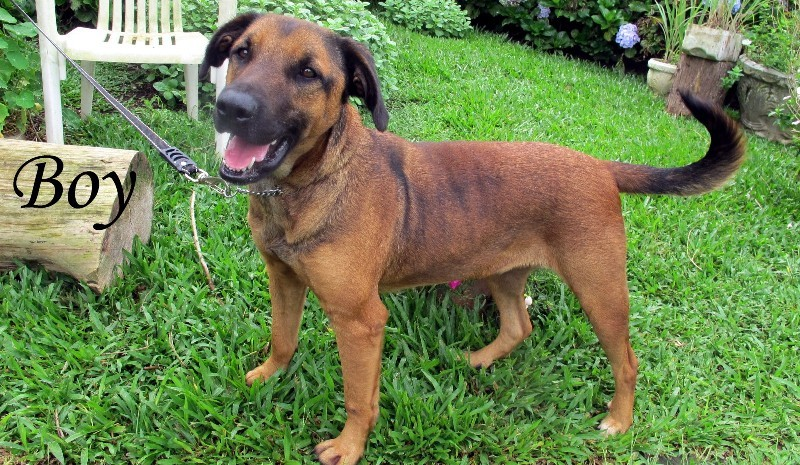
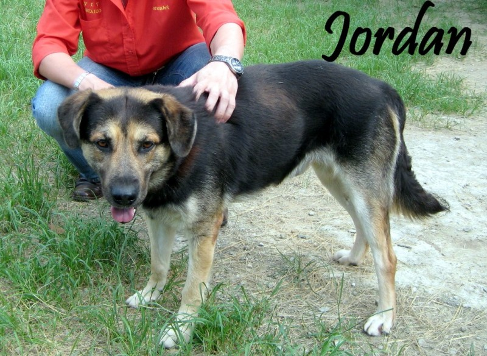
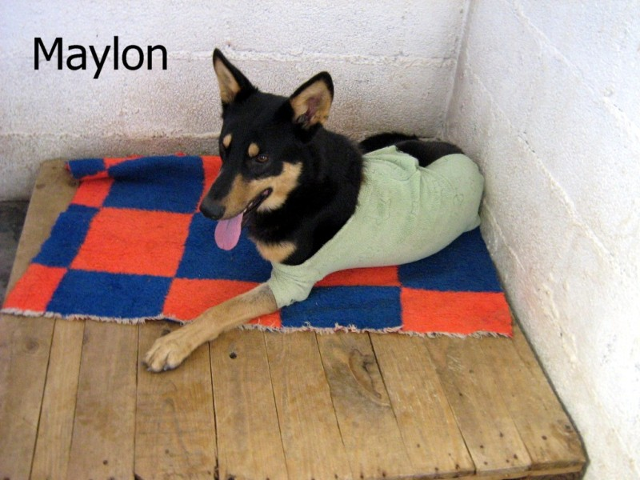
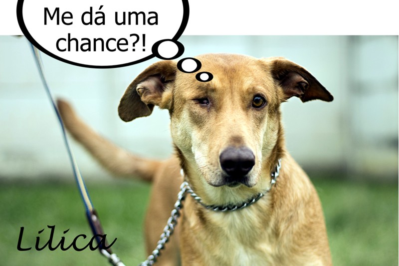
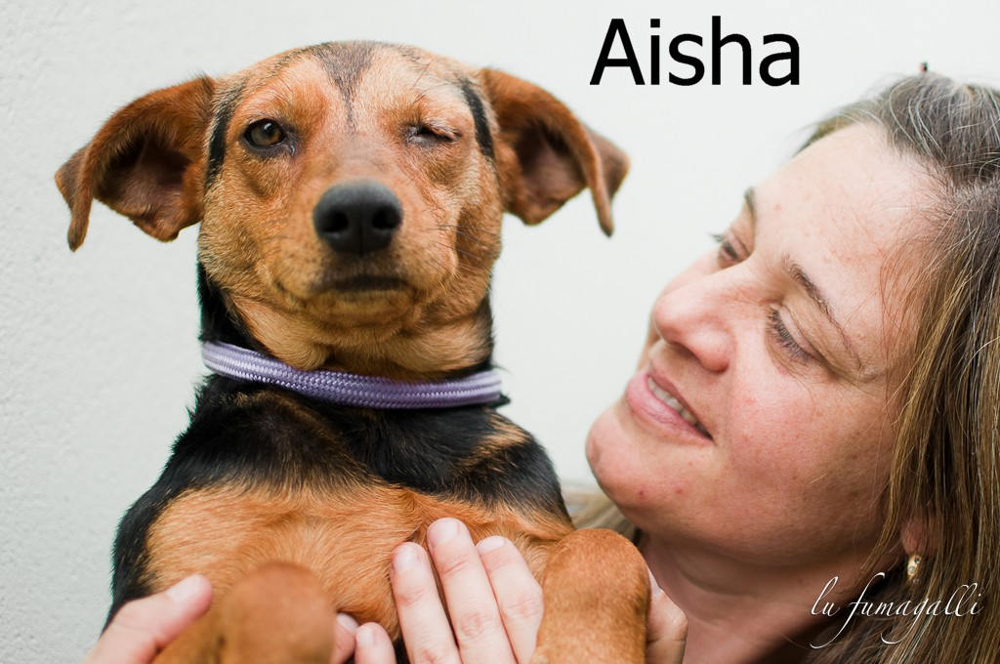

Agradecemos seu interess
em adotar um cão sem dono. Mas, se você tem interesse em adotar um dos nossos cães,
precisamos saber um pouco mais de você, pois do ponto de vista do animal, ser
abandonado pelo amigo é muito doloroso… e eles já sofreram isso uma vez e não
queremos que isso se repita. Eles não merecem ser tratados com desprezo.
DOCUMENTAÇÃO NECESSÁRIA:
Para adotar você precisa ser maior de 21 anos. Não doamos
cães para servirem de guarda ou viverem em empresas. Também não doamos cães
para morarem em sítios ou fazendas apenas sob cuidados de caseiros e funcionários.
Apresentar documentos
originais de RG e CPF, além de comprovante de endereço. Deverá assinar também
um termo de adoção se responsabilizando pelo animal por tempo indeterminado, ou
seja, até o fim da vida.
Cães para adoção


A julgar pelo porte da mãe eles serão de porte MÉDIO. Este lindão aí é o BRADLEY COOPER! Só ele quer ser lindo nesta vida! O rapaz nasceu todo de CHOCOLATE com olhos verdes!!! O que mais dizer?! É maravilhoso!
Caso queira adotar BRADLEY COOPER
Este lindão aí é o DENVER! Que filhote mais lindo! Ele é todo de CHOCOLATE e com olhos que as vezes estão verdes, azuis! Que criança linda!
Caso queira adotar DENVER

Esta é a TRACY!! Ela é toda delicadinha! Tem a pelagem mais clarinha e um olhar que faz qualquer um se derreter! Que coisa mais linda!
Caso queira adotar TRACY
Chanel é super carinhosa, mais até que os seus irmãos meninos. Sempre que entramos na baia, ela é a primeira a nos saudar, sempre com carinho, lambidas, rabinho abanando, uma linda cadela.
Caso queira adotar Chanel


Quem vê esta fotos do nosso “doce gigante” assim tão lindo, mal pode acreditar da forma como ele estava quando chegou para nossos cuidados. Era ainda filhotão, por conta de uma desnutrição severa ele teve ASCITE que é um acumulo de líquidos na cavidade abdominal. O coitadinho parecia uma cabra! Foram várias vezes drenando e com a ótima dieta ele foi se recuperando, recuperando, ganhando peso e hj é este touro de cão! Lindo! Forte! Maravilhoso! Majestoso! Bonzinho! E não pense que ele precisa de espaços enormes pra viver não, claro que se tiver um quintalzão é bom, mas ele é do tipo “bonachão”! Mas hj em dia ele vive numa área de tamanho médio! Então o que ele precisa mesmo é de uma FAMÍLIA! Venham conhecer nosso doce gigante! Vejam as fotos extras que chocantes, mas é passado na vida dele! Veja que carinha mais linda...
Caso queira adotar Boy
Pensa num cãozinho muuuito bonzinho, sossegado, tranquilo, companhia calma e doce para dividir a vida! Esta é a JORDAN
Nossa!
Veja só o filminho em fotos de como o Jordan chegou a nossa vida. O corpo era coberto em sarna e todos nas ruas o enxotavam por isso. Ele vivia sendo chutado! Mas, em nossa porta e abrigo ele recebeu cuidados, carinho, atenção e não demorou muito a brotar o cão lindo que sempre foi. Jordam é um baita cachorrão! Tem uma cabeça linda e grande! Forte! Mas, ele é um pote de mel, afetuoso com todos, sabe dar a patinha quando pedimos.
Um grande amigo pode ser a você e sua família.
Caso queira adotar Jordan


Maylon já foi encontrado assim mancando de sua pata da frente, levamos ao vet que disse que ele havia rompido os ligamentos – possível atropelamento – e que havia perdido os movimentos daquela pata e nada, nenhuma cirurgia poderia trazê-lo de volta e mais, que aquela pata devia ser amputada pois era para ele um “peso”, uma fonte de dor. Ficamos tristes por ele, mas queríamos o melhor para ele. Estes animais são fantásticos e nos dão lições de superação todos os dias! Ás vezes a gente fica aí reclamando da vida e com eles não funciona assim.
Caso queira adotar MAYLON,
Lilica é uma linda e jovem cadela de porte médio/grande. Ela é super amorosa, carinhosa, adora crianças e se dá bem com todo mundo! Ela perdeu um olhinho, alguém muito malvado causou isso a ela. MAS ela enxerga super bem com o outro olho, tem vida absolutamente normal. Não requer cuidado especial nenhum a convivência com ela, não faz uso de medicação alguma! É bem jovem e aguarda alguém que não se importe dela ter perdido um dos olhinhos. Ela nem liga pra isso! Vc liga?
Veja abaixo o filme do dia em que a resgatamos.
Caso queira adotar LILICA,

Aisha apareceu em nossas vidas em abril de 2011. Apareceu, como muitos, do nada, num ponto de ônibus perto de nosso canil. Estava com o olho bem ferido. Nosso vet não conseguia precisar o real motivo, mas com certeza, um trauma, uma pancada! De quem? Como? Nunca saberemos! Infelizmente ela teve que fazer a extração do seu olhinho. Mas AISHA ainda tem o outro, do qual enxerga super bem, normal. Ou seja, AISHA não tem limitação alguma por ter apenas um olhinho! A limitação esta nas nossas cabeças, ela nem liga! E sim espera por uma adoção, alguém que não se importe dela ter apenas um dos olhinhos.
Caso queira adotar Aisha,